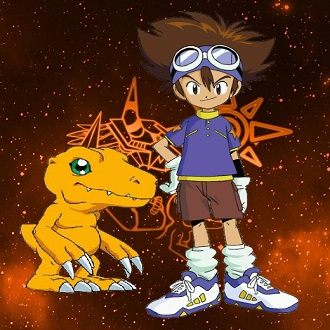
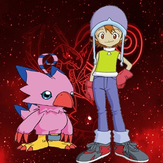
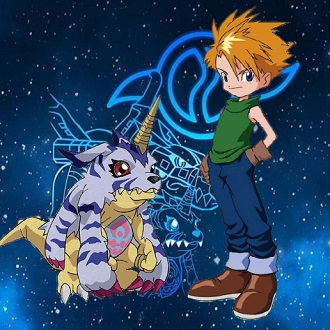
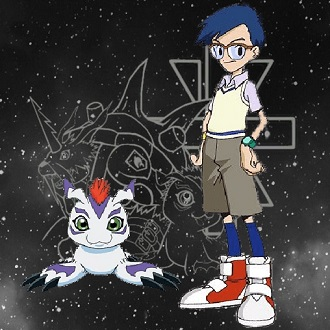
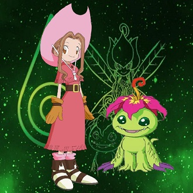
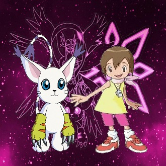
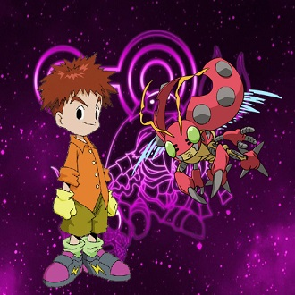
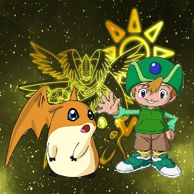

-
Agumon e Tai
Descrição
Ele é o líder da primeira geração de DigiEscolhidos, portador do Brasão da Coragem e irmão mais velho de Kari Kamiya. Tai foi o personagem que começou a tradição dos líderes usarem óculos de segurança. Agumon é um tipo de Digimon Réptil com uma aparência semelhante a um pequeno dinossauro, que cresceu e tornou-se capaz de andar sobre duas patas.Seu elemento é o fogo e seu movimento especial é cuspir uma bola de fogo de sua boca para atacar o oponente (Chama Neném).
-
Sora e Piyomon
Descrição
Sora é uma garota muito amorosa e que ama jogar futebol. Se preocupa em cuidar e ajudar aos outros, mesmo aqueles que ela nem conhece. Ela é portadora do Brasão do Amor. Piyomon é uma Digimon bastante afetiva, que se importa bastante com o grupo e não tem medo de se arriscar para proteger àqueles que ama. Seu elemento é o fogo e seu movimento especial consiste em chamas etéreas (Magical Fire).
-
Matt e Gabumon
Descrição
Matt pode ser considerado uma espécie de braço direito de Tai, apesar de sua personalidade ser bastante diferente: ele é um pouco frio e já demonstrou que prefere passar mais tempo sozinho.Apesar disso, também se preocupa bastante com seus amigos.Assim como Tai, Matt também tem um irmão mais novo, T.K. Ele é o portador do Brasão da Amizade (ou “Brasão da Amizade Verdadeira”). Gabumon é tímido e cauteloso, mas leal e corajoso quando necessário.É um Digimon réptil que se assemelha a um pequeno dinossauro com um casaco de pele azul e uma cauda longa. Seu elemento é o gelo e seu movimento especial é "Petit Fire".
-
Joe e Gomamon
Descrição
O mais velho do grupo, Joe demonstra ser dono de um senso muito grande de responsabilidade, tanto que tem o costume de tentar ser uma “voz da razão” entre os digiescolhidos(apesar de ser um pouco medroso, desastrado e bastante cauteloso.). Ele é o portador do Brasão da Confiança. Gomamon é um Digimon Animal Marinho que conseguiu adquirir locomoção terrestre e que está coberto com uma pelagem térmica. As suas garras são fortes o suficiente para quebrar gelo! Seu elemento é a água e seu movimento especial é guiar os pequenos peixes que o seguem (Marching Fishes).
-
Mimi e Palmon
Descrição
Mimi sempre mostrou ser muito doce e gentil, ao ponto de não gostar nem um pouco de lutar. No entanto, também é bem inocente e sincera, o que já trouxe alguns problemas para ela. Também é conhecida por ser uma ótima cantora e ter hábitos alimentares um pouco estranhos. Ela é a portadora do Brasão da Sinceridade. Palmon é um Digimon Planta com uma flor tropical a florescer na cabeça. Seu elemento é a madeira e seu movimento especial consiste em entrelaçar o oponente nas suas heras, portadoras de uma poderosa toxina (Poison Ivy).
-
Kari e Tailmon
Descrição
Kari sempre mostrou ser doce, inocente e alegre, apesar de ter um lado misterioso e enigmático. Irmã mais nova de Tai a a oitava e última digiescolhida original. Ela é a portadora do Brasão da Luz. Tailmon é imensamente curioso, adora partidas. Apesar do seu pequeno porte, é um precioso Digimon das Espécies Sagradas cuja aparência não combina com a força que possui. Seu elemento é a luz e seus movimentos especiais consistem em usar as longas garras para atacar o adversário (Neko Punch) e manipular o oponente com um olhar penetrante (Cat's Eye).
-
Izzy e Tentomon
Descrição
Izzy pode ser considerado o “cérebro” da equipe, já que é muito inteligente e prefere pensar antes de agir. Se tornou conhecido por seu costume de sempre pesquisar algo em seu notebook e sua enorme curiosidade pelo Mundo Digital. Ele é o portador do Brasão do Conhecimento. Tentomon é o tipo original de Digimon Inseto que, embora tenha uma carapaça dura, ainda é pouco agressivo. Seu elemento é o trovão e seu movimento especial, que possui para certas eventualidades, é lançar eletricidade estática que é amplificada pelas suas asas (Petit Thunder).
-
T.K. e Patamon
Descrição
T.K é o digiescolhido mais jovem do grupo até a entrada de Kari, é irmão mais novo de Matt e sempre mostrou ser alegre e amigável. Ele é o portador do Brasão da Esperança. Patamon é um Digimon Mamífero caracterizado pelas suas grandes orelhas. Consegue utilizá-as como asas e voar, mas, como só vai a uma velocidade de 1 km/h, diz-se que mais lhe vale andar. Seu elemento é o vento e seus movimentos especiais consistem em chupar ar, disparando-o, de seguida, como uma bala explosiva (Air Shot) e golpear o adversário com as suas grandes orelhas (Hane Binta).